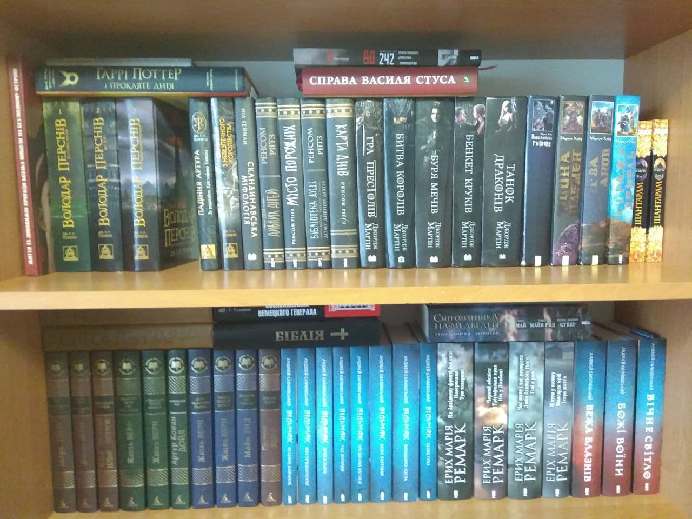

Books in stock:

Already read books:
- «Останнє бажання» (Анджей Сапковский)
- «Меч призначення» (Анджей Сапковський)
- «Кров ельфів» (Анджей Сапковський)
- «Час погорди» (Анджей Сапковський)
- «Хрещення вогнем»( Анджей Сапковський)
- «Вежа Ластівки» (Анджей Сапковський)
- «Володарка Озера» (Анджей Сапковський)
- «Сезон гроз» (Анджей Сапковский)
- «Вежа Блазнів» (Анджей Сапковский)
- «Божі воїни» (Анджей Сапковский)
- «Вічне світло» (Анджей Сапковский)
- «Дім дивних дітей» (Ренсом Ріґґз)
- «Місто порожніх» (Ренсом Ріґґз)
- «Бібліотека душ» (Ренсом Ріґґз)
- «Карта днів» (Ренсом Ріґґз)
- «Гаррі Поттер і прокляте дитя» (Джоан Роулінг)
- «Гобіт, або Туди і Звідти» (Джон Толкін)
- «Всадник без головы» (Майн Рид)
- «Вокруг света за восемьдесят дней» (Жюль Верн)
- «Воспоминания немецкого генерала» (Гейнц Гудериан)
- «Янки из Коннектикута при дворе короля Артура» (Марк Твен)
Priority of books to read:
- «Двадцать тысяч лье под водой» (Жуль Верн)
- «Гра престолів» (Джордж Мартін)
- «Битва королів» (Джордж Мартін)
- «Буря мечів» (Джордж Мартін)
- «Бенкет круків» (Джордж Мартін)
- «Танок з драконами» (Джордж Мартін)
- «Шлях королів. Хроніки буресвітла» (Брендон Сандерсон)
- «Сын Охотника на Медведей» (Фенимор Купер, Майн Рид, Карл Май)
- Ерих Марія Ремарк:
- «На Західному фронті без змін»
- «Повернення»
- «Три товариші»
- «Чорний обеліск»
- «Тріумфальна арка»
- «Ніч у Лісабоні»
- «Час жити і час помирати»
- «Люби ближньго твого»
- «Тіні в раю»
- «Життя у позику»
- «Мансарда мрій»
- «Іскра життя»
- «Повелитель гномов» (Маркус Хайц)
- «Война племен. Проклятые земли» (Маркус Хайц)
- «Битва титанов. Несущие смерть» (Маркус Хайц)
- «Стражи земель. Доспехи демона» (Маркус Хайц)
- «Володар Перснів» (Джон Толкін):
- «Братство персня»
- «Дві вежі»
- «Повернення короля
- «Падіння Артура» (Джон Толкін)
- «Сильмариліон» (Джон Толкін)
- «Сказання з небезпечного королівства» (Джон Толкін)
- «Шантарам Том 1» (Грегори Дэвид Робертс)
- «Шантарам Том 2» (Грегори Дэвид Робертс)
- «Пятнадцатилетний капитан» (Жюль Верн)
- «Двенадцать стульев» (Илья Евгений. Ильф Петров)
- «Дети капитана Гранта» (Жюль Верн)
- «Таинственный остров» (Жюль Верн)
- «Призрак оперы» (Гастон Леру)
- «Олесь Гончар Том 4»
- «Олесь Гончар Том 5»